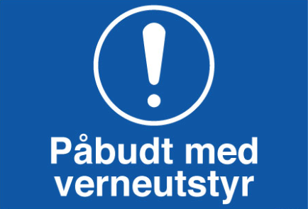

Personlig verneutstyr
Verneutstyr er den siste barrieren mellom deg og faren. Det virker bare hvis du velger riktig utstyr, bruker det riktig og bruker det hver gang.

Der du ser et blått, rundt påbudsskilt, er det påbudt å bruke verneutstyr. Ofte viser skiltet hvilket utstyr det gjelder, for eksempel briller, hørselvern eller hjelm.
Arbeidsgiveren skal skaffe verneutstyret og gi deg opplæring i hvordan det brukes. Du har plikt til å bruke det. Hva som trengs, står i risikovurderingen, i prosedyren og i seksjon 8 i sikkerhetsdatabladet. Godkjent verneutstyr er CE-merket.
Fra topp til tå
Øyne og ansikt
Vernebriller med sideskjerm er minimum på laben. Tettsluttende briller brukes mot sprut og damp. Ansiktsskjerm brukes i tillegg ved stor sprutfare, for eksempel ved tømming av syre eller lut.
Hender
Det finnes ingen hanske som tåler alt. Materialet må passe til kjemikaliet. Se hanskevelgeren under.
Kropp
Labfrakk på laben. I prosessanlegg brukes ofte flammehemmende og antistatisk arbeidstøy. Ved arbeid med syrer og lut kan det være nødvendig med kjemikalieforkle eller kjemikaliedress.
Føtter og hode
Vernesko med tåhette og gli-sikker såle. I anlegget brukes hjelm der det er fare for fallende gjenstander eller for å slå hodet.
Hørsel
Ørepropper eller øreklokker der støyen er høy. Mer om støy i Arbeidsmiljø.
Fall
Ved arbeid i høyden, for eksempel på tanker og i rørgater, brukes fallsikring med sele og line festet i et godkjent forankringspunkt.
Hansker: gjennombrudd og riktig materiale
Kjemikalier kan trenge gjennom hanskematerialet uten at du ser det. Dette kalles permeasjon. Gjennombruddstiden er hvor lang tid det tar før kjemikaliet kommer gjennom hansken. Den avhenger av materiale, tykkelse og kjemikalie. Tynne engangshansker av nitril beskytter mot sprut, men må byttes straks de er tilsølt.
Hanskevelgeren
Velg kjemikalie og se hvor godt ulike hanskematerialer beskytter.
Veiledende vurdering for vanlige hansketyper og sprut eller kort kontakt. Gjennombruddstiden varierer mellom produsenter og tykkelser. Sjekk alltid seksjon 8 i sikkerhetsdatabladet og hanskeprodusentens tabell.
Slik tar du av engangshansker uten å forurense deg selv
- Klyp tak i utsiden av den ene hansken ved håndleddet og trekk den av, slik at den vrenges.
- Hold den avtatte hansken i den hanskekledde hånden.
- Stikk fingrene på den bare hånden inn under kanten på den andre hansken og vreng den av over den første.
- Kast hanskene i riktig avfall og vask hendene.
Åndedrettsvern
Filtermasker renser luften du puster inn. Filteret må passe til stoffet, og det har en fargekode. Friskluftutstyr (luft fra flaske eller slange) må brukes når det er for lite oksygen, når du ikke vet hvilken gass det er, eller når konsentrasjonen er svært høy. Filteret lager ikke oksygen.
| Filter | Beskytter mot | Eksempel |
|---|---|---|
| A (brun) | Organiske gasser og damper med kokepunkt over 65 °C | Toluen, xylen |
| AX (brun) | Organiske stoffer med lavt kokepunkt (under 65 °C) | Aceton, diklormetan |
| B (grå) | Uorganiske gasser | Klor, hydrogensulfid |
| E (gul) | Sure gasser | Svoveldioksid, hydrogenklorid |
| K (grønn) | Ammoniakk og aminer | Ammoniakk |
| P (hvit) | Partikler: støv, røyk, aerosoler (P1–P3, der P3 er best) | Pulverstoffer, slipestøv |
Kombinasjonsfiltre finnes, for eksempel ABEK-P3. Masken må sitte tett: skjegg og skjeggstubb gjør at den lekker. Filteret må byttes etter brukstid eller når du kjenner lukt eller smak.
I yrket
Prosessoperatøren har ofte flammehemmende arbeidstøy, hjelm, vernesko, vernebriller, hørselvern og gassdetektor som fast utstyr, og tar på ekstra vern ved prøvetaking og åpning av utstyr. Laboranten bruker labfrakk, vernebriller og hansker som passer til kjemikaliet. Avtrekksskapet er likevel det viktigste vernet på laben.
Test deg selv
Hva betyr gjennombruddstid?
Tiden det tar før et kjemikalie trenger gjennom hanskematerialet og kommer i kontakt med huden.
Hvorfor er ikke nitrilhansker et godt valg når du arbeider med aceton?
Aceton trenger raskt gjennom nitril. Butylhansker beskytter mye bedre mot aceton.
Når holder det ikke med filtermaske?
Når det er for lite oksygen, når du ikke vet hvilken gass det er, eller når konsentrasjonen er svært høy, for eksempel ved arbeid i en tank. Da må du bruke friskluftutstyr.
Ordliste
| Begrep | Forklaring | Engelsk |
|---|---|---|
| verneutstyr | Utstyr du har på deg for å beskytte deg, for eksempel vernebriller, labfrakk og hansker. | personal protective equipment (PPE) |
| påbudsskilt | Et blått, rundt skilt som viser at det er påbudt å bruke et bestemt verneutstyr. | mandatory sign |
| gjennombruddstid | Tiden det tar før et kjemikalie trenger gjennom hanskematerialet og når huden. | breakthrough time |
| filtermaske | Åndedrettsvern med et filter som renser luften du puster inn. Det lager ikke oksygen. | filter respirator |
| friskluftutstyr | Åndedrettsvern som gir deg ren luft fra flaske eller slange. | supplied-air respirator |
Les mer
- Øv: Tiltakshierarkiet: hvorfor verneutstyr er det siste tiltaket.
- Seksjon 8 i sikkerhetsdatabladet for kjemikaliene du bruker.
Om kildene: Teksten, eksemplene og figurene på denne siden er laget for dette nettstedet. Siden bygger på undervisningsopplegg i kjemiprosess- og laboratoriefag ved Sauda vgs, som er utarbeidet med utgangspunkt i blant annet Kjemien stemmer, Laboranten og åpne nettkilder.